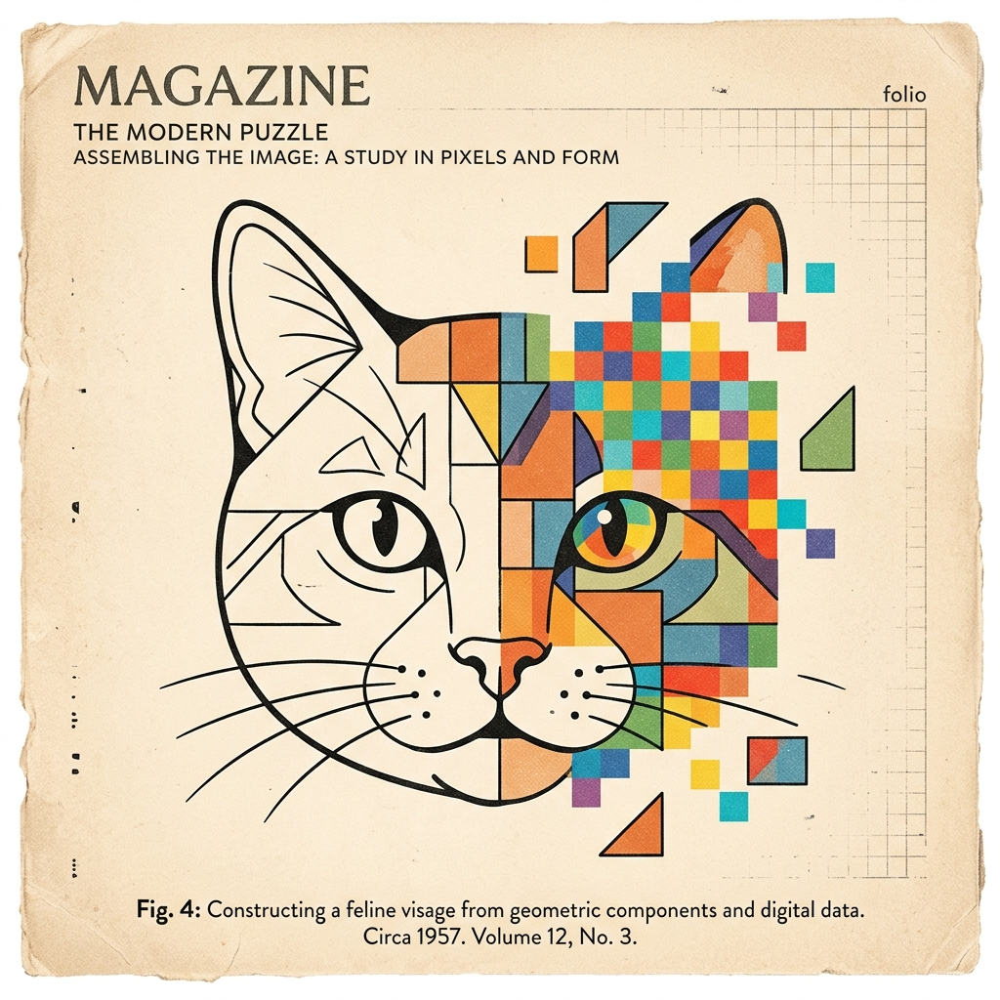
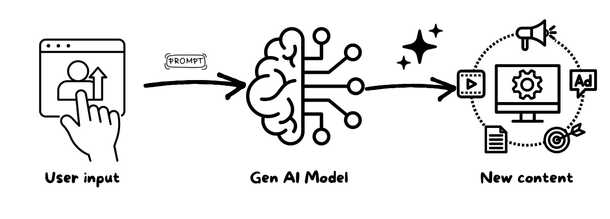
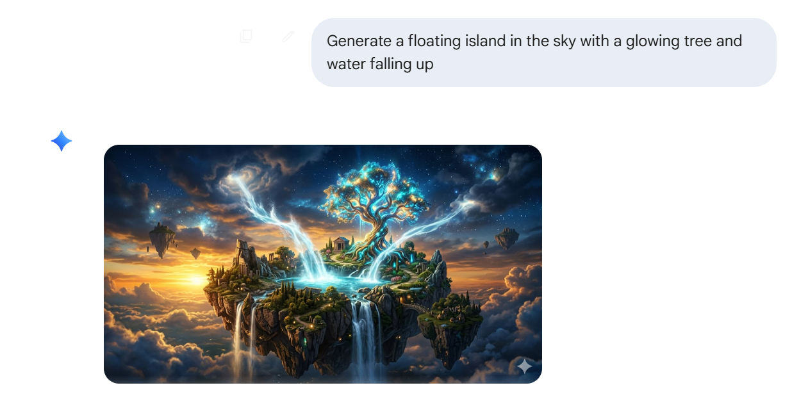
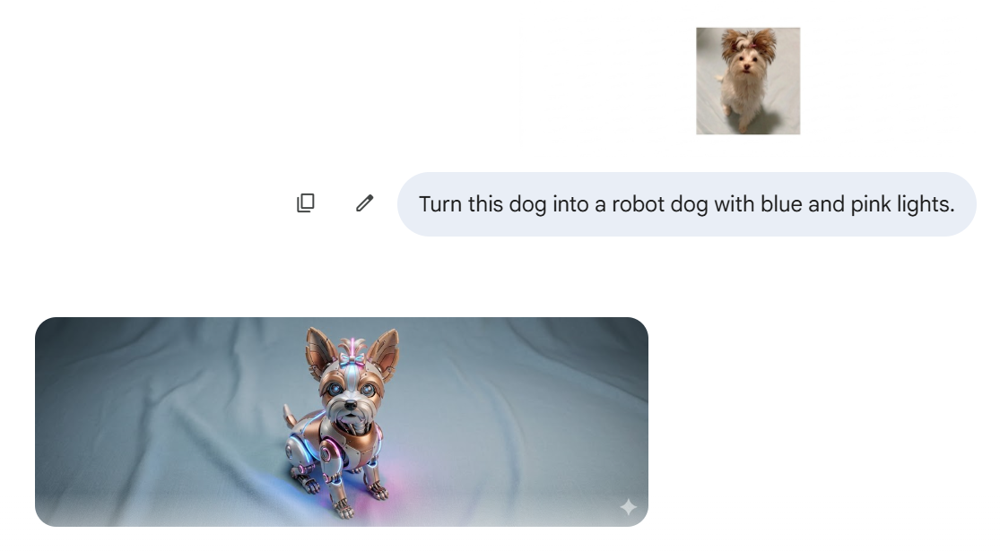
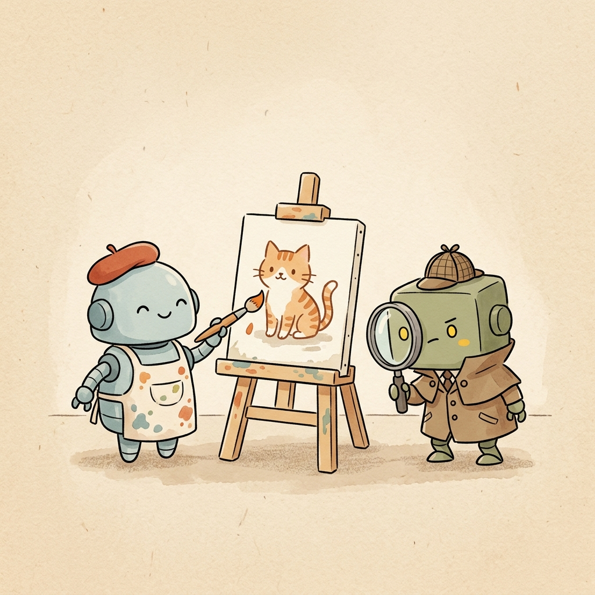
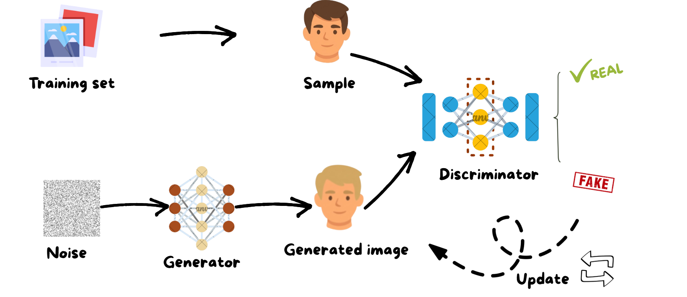
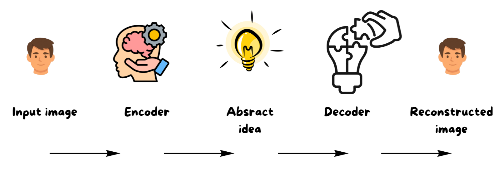
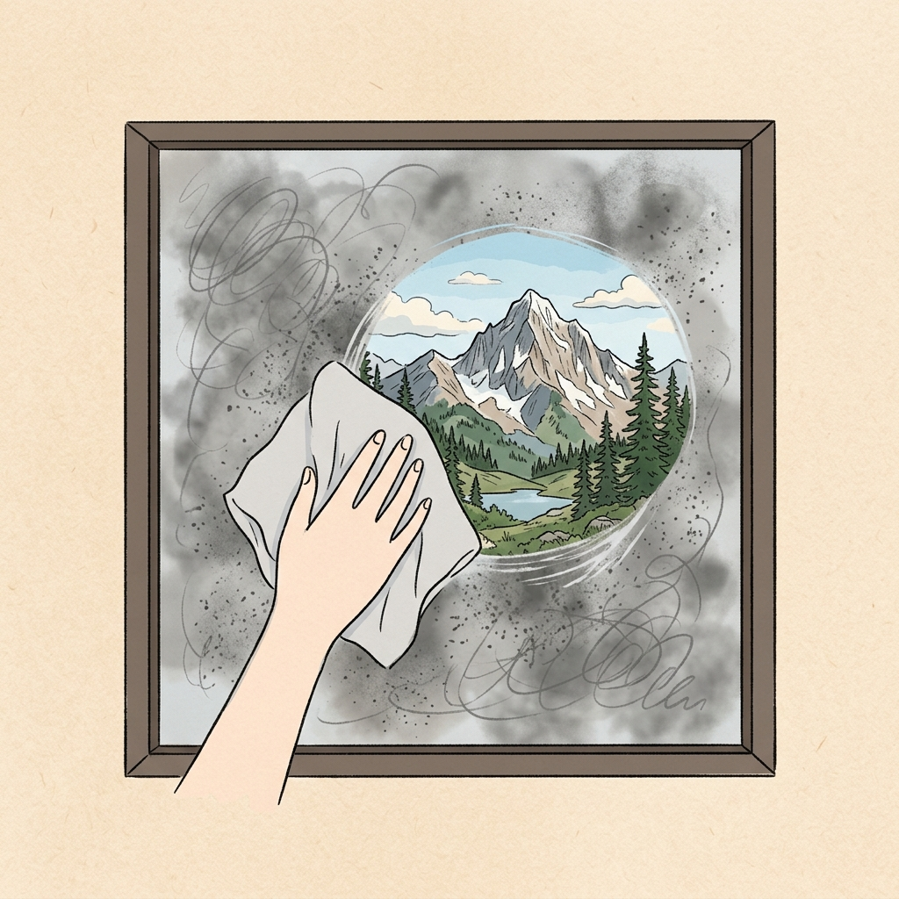
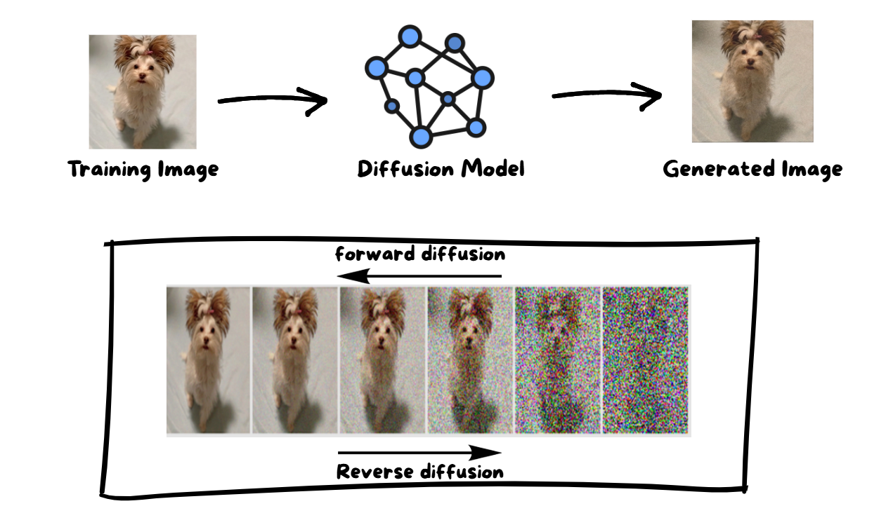

1. Computer Vision
Imagine teaching a child to recognize a dog not by giving them a rulebook, but by showing them thousands of pictures until they just know. That's essentially how computer vision works. For decades, machines could only do this: look, classify, and label. But something shifted. Today, those same machines don't just recognize a dog, they can draw one, from scratch, that has never existed before. This blog walks you through how that leap happened.
How Computers see
A computer does not see like humans. Instead, it sees an image as a grid of numbers called pixels. It does not recognize objects directly. Instead, it searches for patterns such as edges, shapes, and textures.

Fig 1.0: A computer seeing an image as a pixel grid or puzzle of numbers.
For example, to recognize a cat, it may detect ears, whiskers, and body shape. Once enough patterns match, it concludes that the image contains a cat.
2. Gen AI in Computer Vision
Recently, machines learned something new. Instead of only recognizing images, they can now create them. This is called Generative AI. It is a type of artificial intelligence that creates new data instead of only analyzing existing data.
It can generate new images, write text, produce voice, and create videos. This makes it a multimodal technology capable of producing different types of content from a single idea or prompt.
How Generative AI Works

Fig 2.0: From Prompt to Creation: How Generative AI Works
Gemini Example (Image Generation & Editing)
Gemini demonstrates how generative AI can both create and modify images based on a prompt.
Example 1: Text-to-Image Generation

Fig 3.0: Gemini generating an image from a prompt.
Example 2: Image Editing

Fig 3.1: Gemini modifying an uploaded image.
Why Do We Use It?
Generative AI saves time, money, and effort by creating things automatically things that would take humans hours, days, or entire teams.
Creativity: Need 50 logo ideas by tomorrow? Describe what you want and AI generates them in seconds.
Data Generation: Need thousands of X-ray images to train a medical AI but only have a hundred? AI creates realistic fake ones to fill the gap.
Gaming and Film: Building a fantasy world used to take months of artist work. AI does it in hours, so creators focus on the story.
Content Creation: Instead of writing the same ad for 20 different audiences by hand, AI personalizes it automatically for each one.
3. The Three Famous Types of GenAI
GAN (The Artist and the Inspector)

Fig 4.0: The Conceptual Analogy (Artist vs. Inspector).
How it works
A GAN is made of two parts: a Generator (Artist) which creates fake images, and a Discriminator (Inspector) which detects them. They compete against each other until the generator becomes extremely realistic.

Fig 4.1: The Technical GAN Workflow.
- Produces extremely realistic outputs
- Very fast generation after training
- Hard to train because it has two models (Generator and Discriminator) that must learn together, and if one learns too fast, it affects the other.
- Can become unstable because the training can go up and down instead of improving step by step
VAE (The Smart Compressor)
Fig 5.0: The Conceptual Analogy (The Secret Code).
How it works
A VAE compresses an image into a small representation called latent space, then reconstructs it. It works through encoding (compression) and decoding (reconstruction).

Fig 5.1: The Technical VAE Workflow.
- Very stable training process
- Excellent at capturing structure
- Images often look slightly blurry
- Less detail than GAN or Diffusion
Diffusion Models (The Fog Cleaner)

Fig 6.0: The Conceptual Analogy (The Fog Cleaner).
How it works
Diffusion models start with random noise and gradually refine it until a clear image appears. It is like the AI is "finding" the picture hidden inside the mess!

Fig 6.1: Diffusion models Workflow.
- Highest visual quality available
- Highly creative and detailed outputs
- Extremely slow to generate images
- Requires high computational cost
Comparison Summary
| Model | Idea | Advantages | Limitations |
|---|---|---|---|
| GAN | Competition between generator and discriminator | Produces highly realistic images with fast generation after training | Difficult to train and can suffer from instability during learning |
| VAE | Encodes images into a compressed representation and reconstructs them | Stable training process and simple architecture | Generated images are often less sharp and may appear blurry |
| Diffusion | Gradually removes noise step by step to form an image | Produces very high-quality and detailed images with strong stability | Requires many iterative steps, making generation slow and computationally expensive |
Final Thought
Not long ago, computers were purely passive, they could only look, sort, and classify. Now they can create images, write stories, and compose music, starting from nothing but a sentence you type(a prompt). GANs, VAEs, and Diffusion models are three different answers to the same question: how do you teach a machine to imagine? Each has its own personality, one is competitive, one is careful, one is patient. And this is just the beginning.